Procesos e Hilos
Escrito por Adrián Quiroga Linares.
Procesos e hilos - Perdiendo la Cordura
El concepto más importante en cualquier sistema operativo es el de proceso, una abstracción de un programa en ejecución; todo lo demás depende de este concepto. Los procesos son una de las abstracciones más antiguas e importantes que proporcionan los sistemas operativos: proporcionan la capacidad de operar (pseudo) concurrentemente, incluso cuando hay sólo una CPU disponible. Convierten una CPU en varias CPUs virtuales.
2.1. Concepto de proceso
En cualquier sistema de multiprogramación, la CPU conmuta de un proceso a otro con rapidez, ejecutando cada uno durante décimas o centésimas de milisegundos: hablando en sentido estricto, en cualquier instante la CPU está ejecutando sólo un proceso, y en el transcurso de 1 segundo podría trabajar en varios de ellos, dando la apariencia de un paralelismo (o pseudoparalelismo, para distinguirlo del verdadero paralelismo de hardware de los sistemas multiprocesadores con dos o más CPUs que comparten la misma memoria física). Es difícil para las personas llevar la cuenta de varias actividades en paralelo; por lo tanto, los diseñadores de sistemas operativos han evolucionado con el paso de los años a un modelo conceptual (procesos secuenciales) que facilita el trabajo con el paralelismo.
En concepto, cada proceso tiene su propia CPU virtual. En realidad, los procesos compiten por una o varias CPUs reales, que conmutan de un proceso a otro con rapidez. Así, auqnue en todos los intantes la CPU está ejecutando un único proceso, nos da la apariencia de pseudoparalelismo. El algoritmo de planificación de procesos determina cuándo se debe detener el trabajo en un proceso para dar servicio a otro y qué proceso será el nuevo.
La diferencia clave entre un programa y un proceso es que:
- Programa: Es estático, un conjunto de instrucciones almacenadas (por ejemplo, una receta de cocina).
- Proceso: Es dinámico, la actividad de ejecutar un programa con entradas y salidas específicas (como seguir la receta para hornear un pastel).
2.1.1. El modelo del proceso
La figura 2.1.(a) muestra una computadora multiprogramando cuatro programas en memoria; la figura 2.1(b) lista cuatro procesos, cada uno con su propio flujo de control (es decir, su propio contador de programa lógico) y cada uno
ejecutándose en forma independiente. Desde luego que sólo hay un contador de programa físico, por lo que cuando se ejecuta cada proceso, se carga su contador de programa lógico en el contador de programa real. Cuando termina (por el tiempo que tenga asignado), el contador de programa físico se guarda en el contador de programa lógico almacenado del proceso en memoria. En la figura 2.1(c) podemos ver que durante un intervalo suficientemente largo todos los procesos han progresado, pero en cualquier momento dado sólo hay un proceso en ejecución.
La diferencia entre un proceso y un programa es sutil pero crucial. La idea clave es que un proceso es una actividad de cierto tipo: tiene un programa, una entrada, una salida y un estado. Varios procesos pueden compartir un solo procesador mediante el uso de un algoritmo de planificación para determinar cuándo se debe detener el trabajo en un proceso para dar servicio a otro. En resumen, un proceso es un programa en ejecución o un programa cargado que incluye códigos, datos, pilas, espacio de direcciones, señales, archivos, etc. Un programa, en cambio, es una secuencia de instrucciones y estructuras de datos necesarias para la ejecución, y se almacena en un fichero ejecutable llamado código máquina.
2.2. Gestión de procesos
2.2.1. Creación de un proceso
Los sistemas operativos necesitan cierta manera de crear procesos. Hay cuatro eventos principales que provocan la creación de un proceso:
-
- El arranque del sistema.
-
- La ejecución, desde un proceso, de una llamada al sistema para creación de procesos (fork).
-
- Una petición del usuario para crear un proceso (abrir la app del navegador).
-
- El inicio del trabajo por lotes
Generalmente, cuando se arranca un sistema operativo se crean varios procesos. Algunos de ellos son procesos en primer plano; es decir, procesos que interactúan con los usuarios (humanos) y realizan trabajo para ellos. Otros son procesos en segundo plano, que no están asociados con usuarios específicos sino con una función específica. Los procesos que permanecen en segundo plano para manejar ciertas actividades se conocen como demonios (demons). Estos procesos se inician mediante una secuencia de comandos de shell cuando se inicia el sistema.
En Linux, los procesos se crean de una forma especialmente simple. La llamada al sistema fork crea una copia exacta del proceso original. El proceso que va a realizar la bifurcación es el proceso padre. Al nuevo proceso se le conoce como proceso hijo. El padre y el hijo tienen cada uno sus propias imágenes de memoria privadas. Si el padre cambia después una de sus variables, los cambios no son visibles para el hijo y viceversa. La llamada al sistema fork devuelve un 0 para el hijo y un valor distinto de cero para el padre, el PID (Process Identifier, Identificador de proceso) del hijo, al padre.
Los procesos padre e hijo tienen la misma memoria, las mismas variables y los mismos archivos abeirtos. Sin embargo, tienen espacios de direcciones distintos, por lo que si uno de ellos modifica una palabra en su espacio de direcciones, la modificación no es visible para el otro.
Carrera Crítica: como el padre y el hijo comparten el mismo puntero en el archivo, si ambos actual sobre él al mismo tiempo pueden aparecer errores de lectura o escritura, pues es imposible predecir cuál ejecutará primero el SO.
2.2.2. Terminación de procesos
Una vez que se crea un proceso, empieza a ejecutarse y realiza el trabajo al que está destinado, Tarde o temprano el nuevo proceso terminará, por lo general debido a una de las siguientes condiciones:
- Salida normal (voluntaria) (exit(0))
-
- Salida por error (voluntaria)
-
- Error fatal (involuntaria) (segfault)
-
- Eliminado por otro proceso (involuntaria) (kill(Pid))
La mayoría de los procesos terminan debido a que han concluido su trabajo. Cuando un compilador ha compilado el programa que recibe, ejecuta una llamada al sistema para indicar al sistema operativo que ha terminado. Esta llamada es exit en UNIX. La segunda razón de terminación es que el proceso descubra un error. Por ejemplo, si un usuario escribe el comando para compilar el programa foo.c y no existe dicho archivo, el compilador simplemente termina. La tercera razón de terminación es un error fatal producido por el proceso, a menudo debido a un error en el programa. Algunos ejemplos incluyen el ejecutar una instrucción ilegal, hacer referencia a una parte de memoria no existente o la división entre cero. La cuarta razón por la que un proceso podría terminar es que ejecute una llamada al sistema que indique al sistema operativo que elimine otros procesos. En UNIX esta llamada es kill (en caso de que kill no especifique otra señal manda la señal SIGTERM, que mata al proceso).
Exit implícitos: si un proceso finaliza sin realizar un exit el compilador lo incluirá de manera automática. Además, si tenemos una función que devuelve un tipo distinto de void y en algún caso no especificamos en valor de retorno, esa función va a devolver un valor aleatorio por normal general, aunque si probáis con códigos de este estilo dará la salida esperada, aunque no tendría por qué darla.
Ahora vamos a explicar cómo esperar a la terminación de un proceso. Considere el caso de un shell. Lee un comando de la terminal, bifurca un proceso hijo, espera a que el hijo ejecute el comando y después lee el siguiente comando cuando el hijo termina. Para esperar a que el hijo termine, el padre ejecuta una llamada al sistema waitpid, que sólo espera a que el hijo termine (cualquier hijo, si existe más de uno). Waitpid tiene tres parámetros. El primero permite al proceso que hizo la llamada esperar a un hijo específico. Si es -1, puede ser cualquier hijo anterior (es decir, el primer hijo que termine). El segundo parámetro es la dirección de una variable que se establecerá con el estado de salida del hijo (terminación normal o anormal y valor de salida). El tercero determina si el proceso que hizo la llamada se bloquea o regresa si ningún hijo ha terminado.
En el caso del shell, el proceso hijo debe ejecutar el comando escrito por el usuario. Para ello utiliza la llamada al sistema exec, la cual hace que la imagen de todo su núcleo se reemplace por el archivo nombrado en su primer parámetro. En la figura 2.4. se muestra un shell muy simplificado, en el que se ilustra el uso de execve. Normalmente tras crear los procesos todos ejecutan un cambio de imagen.
Exec es la llamada al sistema más compleja. El resto de las llamadas son más simples. Como ejemplo de una llamada simple considere exit, que los procesos deben usar al terminar su ejecución. Tiene un parámetro: el estado de salida (0 a 255), el cual se devuelve al padre en la variable status de la llamada al sistema waitpid. El byte de orden inferior de status contiene el estado de terminación, donde 0 es la terminación normal y los
otros valores son diversas condiciones de error. El byte de orden superior contiene el estado de salida del hijo (0 a 255), según lo especificado en la llamada del hijo a exit.
2.2.3 Señales
Un proceso puede enviar lo que se conoce como una señal a otro proceso. Las señales sirven para identificar a los procesos sobre los eventos que ocurren en el sistema. Se identifican mediante una constante simbólica o con un entero. Pueden ser generadas por excepciones, otros procesos (kill), interrupciones de terminal, control de tareas, notificaciones de E/S y alarmas.
Cada señal tiene asignado un comportamiento por defecto. Esta acción se realiza en el proceso receptor de la señal. Los procesos pueden indicar al sistema lo que quieren que ocurra cuando llegue una señal. Las opciones son ignorarla, atraparla o dejar que la señal elimine el proceso (la opción predeterminada para la mayoría de las señales). Si un proceso elige atrapar las señales que se le envían, debe especificar un procedimiento para el manejo de señales. Las señales también se utilizan para otros fines. Por ejemplo, si un proceso está realizando operaciones aritméticas de punto flotante, y de manea inadvertida realiza una división entre 0, recibe una señal SIGFPE (excepción de punto flotante).
Las señales son un mecanismo de comunicación asíncrono utilizado en los sistemas operativos basados en POSIX para notificar a un proceso de eventos del sistema o para sincronización entre procesos. Son esenciales para manejar interrupciones, errores y acciones específicas del sistema operativo o de otros procesos. Se parecen a las interrupciones, pero son lanzadas por software y se puede definiar qué rutina se ejecuta cuando se reciben
| Señal | Descripción |
|---|---|
| SIGABRT | Solicita que el proceso aborte y genere un núcleo de depuración ( core dump ). |
| SIGALRM | Indica que expiró un temporizador configurado por el proceso. |
| SIGFPE | Error matemático (como división por cero o error de punto flotante). |
| SIGHUP | Indica que se desconectó la terminal o línea telefónica asociada. |
| SIGILL | Instrucción ilegal detectada en el proceso. |
| SIGKILL | Termina el proceso inmediatamente (no se puede capturar ni ignorar). |
| SIGPIPE | Escritura en un pipe sin lectores activos. |
| SIGSEGV | Violación de memoria (acceso a una dirección no válida). |
| SIGTERM | Solicita la finalización ordenada del proceso. |
| SIGUSR1 | Señal personalizada definida por el usuario. |
| SIGUSR2 | Otra señal personalizada para propósitos definidos por el usuario. |
La señal SIGINT (Signal Interrupt) es una interrupción que se envía a un proceso cuando el usuario presiona CTRL+C en la terminal. Esta señal le indica al proceso que debe finalizar de manera controlada. Si no se maneja explícitamente, el sistema termina el proceso de forma predeterminada. La señal SIGCHLD se envía a un proceso padre cuando uno de sus procesos hijo cambia de estado. El proceso padre puede usar esta señal para manejar eventos del hijo. Es ignorada por defecto, esto significa que, si un proceso padre no la maneja explícitamente ni espera a los procesos hijos con funciones como wait, los procesos hijos que terminan pueden quedar en estado zombie hasta que se recolecten.
Las señales pueden generarse por diversas razones, como excepciones del sistema, comandos de otros procesos
(como el uso de kill), interrupciones desde la terminal (por ejemplo, al presionar CTRL+C), la finalización de un proceso hijo en el control de tareas, la gestión de cuotas, notificaciones relacionadas con operaciones de E/S (siempre que no sean interrupciones generadas por controladoras hardware), y alarmas programadas. La recepción de estas señales implica que el proceso receptor ejecute la acción correspondiente, incluyendo, en algunos casos, su propia terminación.
Para ello, es esencial que el proceso esté correctamente planificado para responder adecuadamente al evento señalado. Para anunciar que un proceso está dispuesto a atrapar una señal, el proceso puede usar la llamada al sistema sigaction. El primer parámetro es la señal que va a atrapar. El segundo es el apuntador a una estructura que proporciona un apuntador al procedimiento de manejo de señales, así como otros bits y banderas. El tercero apunta a una estructura en la que el sistema desenvuelve la información sobre el manejo de señales que está en efecto, en caso de que se tenga que restaurar después.
El manejador de señales se puede ejecutar todo el tiempo que quiera. Sin embargo, en la práctica es común encontrar manejadores de señales muy cortos. Cuando termina el procedimiento de manejo de señales, regresa al punto desde el cual se interrumpió. La llamada al sistema sigaction también se puede utilizar para hacer que se ignore una señal, o para restaurar la acción predeterminada, que es eliminar el proceso. La llamada al sistema kill permite que un proceso envíe una señal a otro proceso relacionado. Para muchas aplicaciones en tiempo real, hay que interrumpir un proceso después de un intervalo específico para realizar una acción. Para manejar esta situación se utiliza la llamada al sistema alarm. El parámetro especifica un intervalo en segundos, después del cual se envía una señal SIGALARM al proceso. Un proceso sólo puede tener una alarma pendiente en cualquier momento.
2.3.4. Jerarquías de procesos
Un proceso y todos sus hijos, junto con sus posteriores descendientes, forman un grupo de procesos. Cuando un usuario envía una señal del teclado, esta se envía a todos los miembros del grupo de procesos. De manera individual, cada proceso puede atrapar la señal, ignorarla o tomar la acción predeterminada que es ser eliminado por la señal.
Veamos la forma en que UNIX se inicializa a sí mismo cuando se enciende la computadora. Hay un proceso especial (llamado init) en la imagen de inicio. Cuando empieza a ejecutarse, lee un archivo que le indica cuántas terminales hay. Después utiliza fork para crear un proceso por cada terminal. Estos procesos esperan a que alguien inicie la sesión. Si un inicio de sesión tiene éxito, el proceso de inicio de sesión ejecuta un shell para aceptar comandos. Estos pueden iniciar más procesos y así sucesivamente.
En contraste, Windows no tiene un concepto de una jerarquía de procesos. Todos los procesos son iguales, La única sugerencia de jerarquía de procesos es que, cuando se crea un proceso, el padre recibe un indicador especial un token (llamado manejador) que puede utilizar para controlar al hijo. Sin embargo, tiene la libertad de pasar este indicador a otros procesos, con lo cual invalida la jerarquía.
2.3.5. Estados de un proceso
Aunque cada proceso es una entidad independiente, con su propio contador de programa y estado interno, a menudo los procesos necesitan interactuar con otros. Un proceso puede generar cierta salida que otro proceso utiliza como entrada. En el comando de shell
cat capitulo1 capitulo2 capitulo3 | grep arbol
el primer proceso, que ejecuta cat, concatena tres archivos y los envía como salida. El segundo proceso, que ejecuta grep, selecciona todas las líneas que contengan la palabra "arbol". Dependiendo de la velocidad relativa de los dos procesos (que dependen tanto de la complejidad relativa de los programas, como de cuánto tiempo ha tenido cada uno la CPU), puede ocurrir que grep esté listo para ejecutarse, pero que no haya una entrada esperándolo. Entonces debe bloquear hasta que haya una entrada disponible.
Cuando un proceso se bloquea, lo hace debido a que por lógica no puede continuar, comúnmente porque está esperando una entrada que todavía no está disponible. También es posible que un proceso, que esté listo en concepto y pueda ejecutarse, se detenga debido a que el sistema operativo ha decidido asignar la CPU a otro proceso por cierto tiempo.
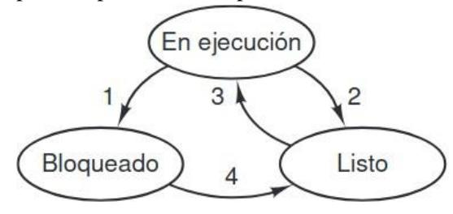
Si utilizamos el modelo de los procesos, es mucho más fácil pensar en lo que está ocurriendo dentro del sistema. Algunos de los procesos ejecutan programas que llevan a cabo los comandos que escribe un usuario; otros son parte del sistema y se encargan de tareas como cumplir con las peticiones de los servicios de archivos o administrar los detalles de ejecutar una unidad de disco. Cuando ocurre una interrupción de disco, el sistema toma una decisión para dejar de ejecutar el proceso actual y ejecutar el proceso de disco que está bloqueado esperando esta interrupción. Así, en vez de pensar en las interrupciones, podemos pensar en los procesos de usuario, procesos de disco, procesos de terminal, etc., que se bloquean cuando están esperando a que algo ocurra. Cuando se ha leído el disco o se ha escrito el carácter, el proceso que espera se desbloquea y es elegible para continuar ejecutándose. El nivel más bajo del sistema operativo es el planificador, con una variedad de procesos encima de él. Todo el manejo de las interrupciones y los detalles relacionados con iniciar y detener los procesos se ocultan en lo que aquí se denomina planificador.
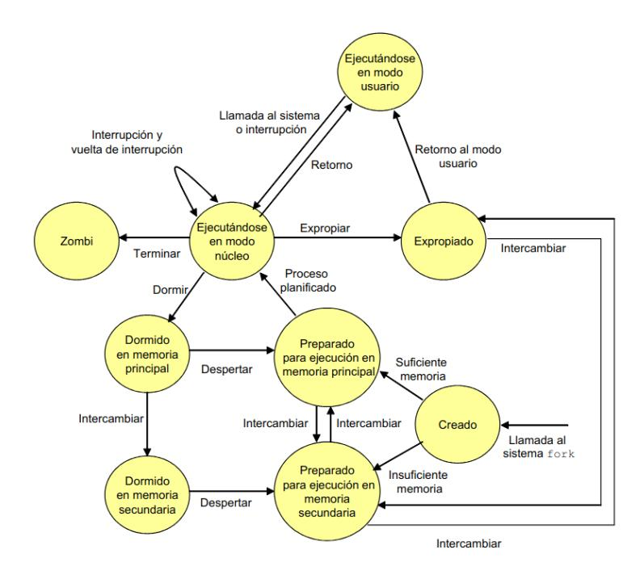
| Swapping | El sistema operativo necesita liberar suficiente memoria princi- pal para traer un proceso en estado Listo de ejecución. |
|---|---|
| Otras razones del sistema operativo | El sistema operativo puede suspender un proceso en segundo plano o de utilidad o un proceso que se sospecha puede cau sar algún problema. |
| Solicitud interactiva del usuario | Un usuario puede desear suspender la ejecución de un progra ma con motivo de su depuración o porque está utilizando un recurso. |
| Temporización | Un proceso puede ejecutarse periódicamente (por ejemplo, ur proceso monitor de estadísticas sobre el sistema) y puede sus penderse mientras espera el siguiente intervalo de ejecución. |
| Solicitud del proceso padre | Un proceso padre puede querer suspender la ejecución de un descendiente para examinar o modificar dicho proceso sus pendido, o para coordinar la actividad de varios procesos des cendientes. |
2.3.6. Implementación de los procesos
Para implementar el modelo de procesos, el sistema operativo mantiene una tabla llamada tabla de procesos, con sólo una entrada por cada proceso. Esta entrada contiene información importante acerca del estado del proceso, incluyendo su contador de programa, apuntador de pila, asignación de memoria, estado de sus archivos abiertos, información de contabilidad y planificación, y todo lo demás que debe guardarse acerca del proceso cuando éste cambia del estado en ejecución a listo o bloqueado, de manera que se pueda reiniciar posteriormente como si nunca se hubiera detenido.
| Adminis | tración de archivos |
|---|---|
| Directorio | o raíz |
| Directorio | o de trabajo |
| Descripc | iones de archivos |
| ID de usi | uario |
| ID de gru | oqu |
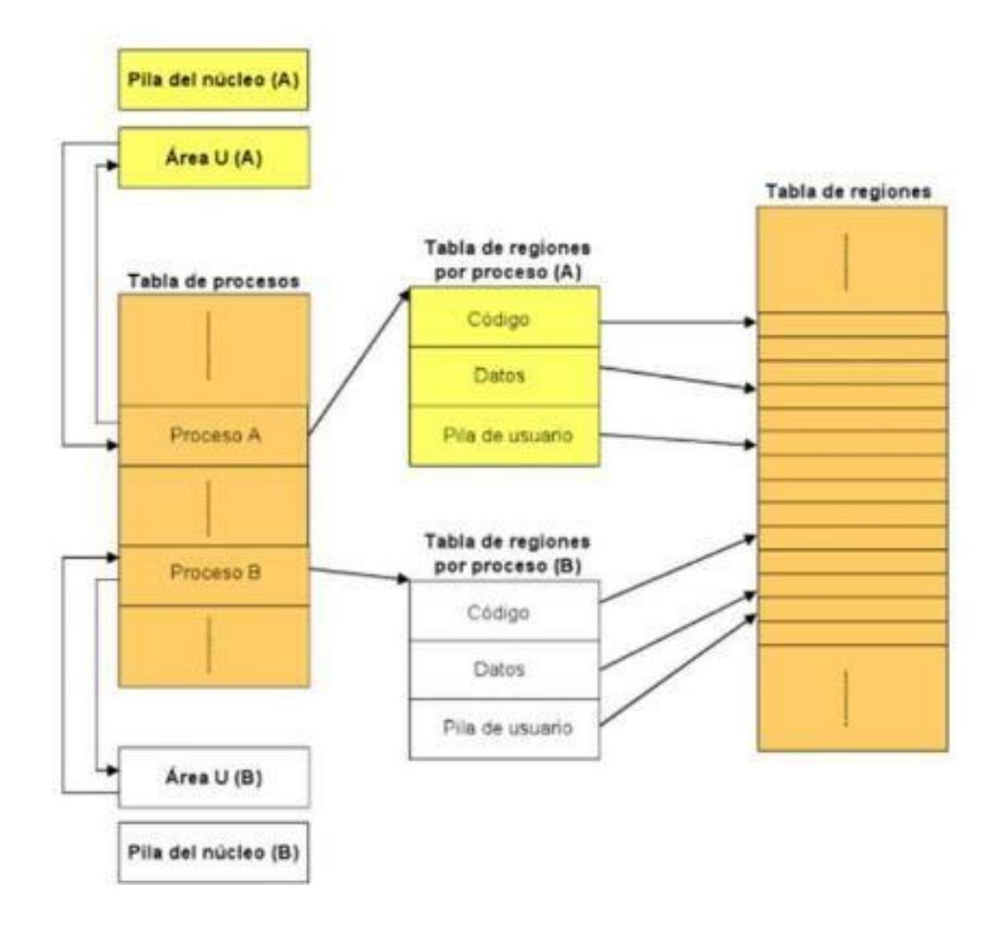
- Pila del núcleo: almacena funciones o rutinas invocadas durante la ejecución de un proceso en modo núcleo.
- Área U: almacena información de control necesaria para que el kernel gestione el proceso mientras se está ejecutando. Contiene un puntero a la entrada a la entrada del proceso en la tabla de procesos.
- Tabla de regiones: almacena una entrada para cada región (código, datos y pila de usuario) asignada a algún proceso
2.3.7 Introducción a las Interrupciones
Ahora que hemos analizado la tabla de procesos, es posible explicar un poco más acerca de cómo la ilusión de varios procesos secuenciales se mantiene en una (o en varias) CPU.
Cada clase de operación de E/S tiene una entrada en el VECTOR DE INTERRUPCIÓN del sistema, que contiene la dirección del procedimiento de interrupción para esa clase. El procedimiento de interrupción de un tipo de operación de E/S sirve para manejar las interrupciones de dicha clase.
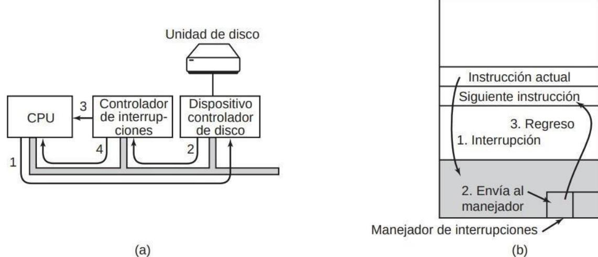
FIGURA 2.11. (a) Los pasos para iniciar un dispositivo de E/S y obtener una interrupción. (b) El procesamiento de interrupciones involucra tomar la interrupción, ejecutar el manejador de interrupciones y regresar al programa de usuario.
- Se recibe una interrupción desde una controladora E/S (o desde un reloj)
- El hardware guarda en la pila del proceso en ejecución actual ciertos registros como el PC, el PSW, etc.
- El hardware carga como nuevo PC la dirección especificada en la entrada adecuada del vector de interrupción para ejecutar el procedimiento de interrupción.
- o Rutina 1 (en ensamblador): igual para todas las interrupciones de todas las clases.
- o Guarda los registros en la entrada de la tabla de procesos del proceso en ejecución actual
- o Establece una nueva pila temporal, que usará el procedimiento de interrupción.
- o Rutina 2 (en C): específica para cada interrupción.
- o Rutina 1 (en ensamblador): igual para todas las interrupciones de todas las clases.
- El planificador decide qué proceso va a ejecutar a continuación.
- El control se devuelve al código ensamblador para cargar los registros y el mapa de memoria del proceso seleccionado
- Se ejecuta el proceso seleccionado.
2.3.7 Modelación de la multiprogramación
Cuando se utiliza la multiprogramación, el uso de la CPU se puede mejorar. Dicho en forma cruda: si el proceso promedio realiza cálculos sólo 20 por ciento del tiempo que está en la memoria, con cinco procesos en memoria a la vez la CPU deberá estar ocupada todo el tiempo. Sin embargo, este modelo es demasiado optimista, ya que supone que los cinco procesos nunca estarán esperando la E/S al mismo tiempo.
Un mejor modelo es analizar el uso de la CPU desde un punto de vista probabilístico. Suponga que un proceso gasta una fracción p de su tiempo esperando a que se complete una operación de E/S. Con n procesos en memoria a la vez, la probabilidad de que todos los n procesos estén
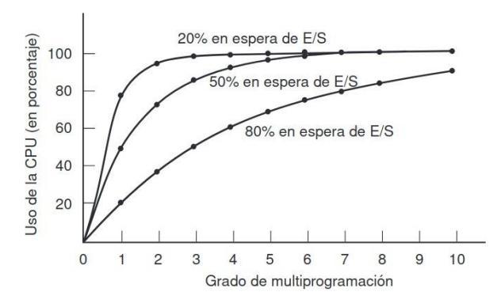
esperando la E/S (en cuyo caso, la CPU estará inactiva) es p n. Entonces, el uso de la CPU se obtiene mediante la fórmula:
Dónde n es el número de procesos y p es la fracción de tiempo esperando a completar una operación de E/S.
2.4. Hilos
En los sistemas operativos tradicionales, cada proceso tiene un espacio de direcciones y un solo hilo de control. De hecho, ésa es casi la definición de un proceso. Sin embargo, con frecuencia hay situaciones en las que es conveniente tener varios hilos de control en el mismo espacio de direcciones que se ejecuta en cuasi-paralelo, como si fueran procesos (casi) separados (excepto por el espacio de direcciones compartido).
2.4.1. Uso de hilos
Hay varias razones de tener estos miniprocesos, conocidos como hilos. La principal razón de tener hilos es que en muchas aplicaciones se desarrollan varias actividades a la vez. Algunas de ésas se pueden bloquear de vez en cuando. Al descomponer una aplicación en varios hilos secuenciales que se ejecutan en cuasi-paralelo, el modelo de programación se simplifica.
Esta precisamente la justificación de tener procesos. En vez de pensar en interrupciones, temporizadores y conmutaciones de contexto, podemos pensar en procesos paralelos. Sólo que ahora con los hilos agregamos un nuevo elemento: la habilidad de las entidades en paralelo de compartir un espacio de direcciones y todos sus datos entre ellas. Esta habilidad es esencial para ciertas aplicaciones, razón por la cual no funcionará el tener varios procesos (con sus espacios de direcciones separados).
Un segundo argumento para tener hilos es que, como son más ligeros que los procesos, son más fáciles de crear (es decir, rápidos) y destruir. En muchos sistemas, la creación de un hilo es de 10 a 100 veces más rápida que la de un proceso. Cuando el número de hilos necesarios cambia de manera dinámica y rápida, es útil tener esta propiedad.
Una tercera razón de tener hilos es también un argumento relacionado con el rendimiento. Los hilos no producen un aumento en el rendimiento cuando todos ellos están ligados a la CPU, pero cuando hay una cantidad considerable de cálculos y operaciones de E/S, al tener hilos estas actividades se pueden traslapar, con lo cual se agiliza la velocidad de la aplicación.
Por último, los hilos son útiles en los sistemas con varias CPUs, en donde es posible el verdadero paralelismo. Es más fácil ver por qué los hilos son útiles si utilizamos ejemplos concretos. Como primer ejemplo considere un procesador de palabras.
Por lo general, los procesadores de palabras muestran el documento que se va crear en la pantalla exactamente como aparecerá en la página impresa. En especial, todos los saltos de línea y de página están en sus posiciones correctas y finales, de manera que el usuario pueda inspeccionarlas y cambiar el documento si es necesario.
Suponga que el usuario está escribiendo un libro. Desde el punto de vista del autor, es más fácil mantener todo el libro en un solo archivo para facilitar la búsqueda de temas, realizar sustituciones globales, etc. También, cada capítulo podría estar en un archivo separado; sin embargo, tener cada sección y subsección como un archivo separado puede ser una verdadera molestia si hay que realizar cambios globales en todo el libro, ya que entonces tendrían que editarse cientos de archivos en forma individual.
Ahora considere lo que ocurre cuando el usuario repentinamente elimina un enunciado de la página 1 de un documento de 800 páginas. Después de revisar que la página modificada esté correcta, el usuario desea realizar otro cambio en la página 600 y escribe un comando que indica al procesador de palabras que vaya a esa página. Entonces, el procesador de palabras tiene que volver a dar formato a todo el libro hasta la página 600 en ese momento, debido a que no sabe cuál será la primera línea de la página 600 sino hasta que haya procesado las demás páginas. Puede haber un retraso considerable antes de que pueda mostrar la página 600 y el usuario estaría descontento.
Aquí pueden ayudar los hilos. Suponga que el procesador de palabras se escribe como un programa con dos hilos. Un hilo interactúa con el usuario y el otro se encarga de volver a dar formato en segundo plano. El proceso de volver a dar formato se completará antes de que el usuario pida ver la página 600, para que pueda mostrarse al instante Ahora agregamos un tercer hilo. Muchos procesadores de palabras tienen la característica de guardar de
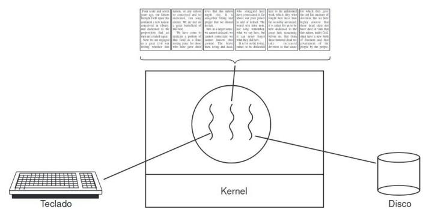
manera automática todo el archivo en el disco cada cierto número de minutos, para proteger al usuario contra la pérdida de todo un día de trabajo en caso de un fallo en el programa, el sistema o la energía. El tercer hilo se puede encargar de los respaldos en disco sin interferir con los otros dos.
Si el programa tuviera sólo un hilo, entonces cada vez que iniciara un respaldo en el disco se ignorarían los comandos del teclado y el ratón hasta que se terminara el respaldo. El usuario sin duda consideraría esto como un rendimiento pobre. De manera alternativa, los eventos de teclado y ratón podrían interrumpir el respaldo en disco, permitiendo un buen rendimiento, pero produciendo un modelo de programación complejo, controlado por interrupciones. Con tres hilos, el modelo de programación es mucho más simple. El primer hilo interactúa sólo con el usuario, el segundo proceso vuelve a dar formato al documento cuando se le indica y el tercero escribe el contenido de la RAM al disco en forma periódica. Debemos aclarar que aquí no funcionaría tener tres procesos separados, ya que los tres hilos necesitan operar en el documento. Al tener tres hilos en vez de tres procesos, comparten una memoria común y por ende todos tienen acceso al documento que se está editando.
Ahora considere otro ejemplo más de la utilidad de los hilos: un servidor para un sitio en World Wide Web. Las solicitudes de páginas llegan y la página solicitada se envía de vuelta al cliente. En la mayoría de los sitios Web, algunas páginas se visitan con más frecuencia que otras. Considere la forma en que podría escribirse el servidor Web sin hilos. El resultado neto es que se pueden procesar menos peticiones/segundo.
Por ende, los hilos obtienen un aumento considerable en el rendimiento, pero cada hilo se programa de manera secuencial, en forma usual.
2.4.2. El modelo clásico de hilo
El modelo de procesos se basa en dos conceptos independientes: agrupamiento de recursos y ejecución. Una manera de ver a un proceso es como si fuera una forma de agrupar recursos relacionados. Un proceso tiene
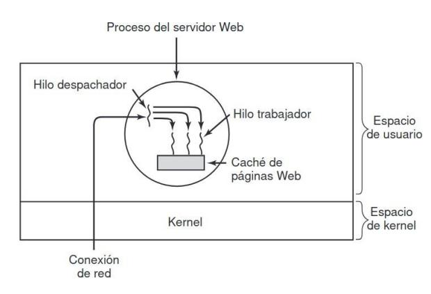
un espacio de direcciones que contiene texto y datos del programa, así como otros recursos. Estos pueden incluir archivos abiertos, procesos hijos, alarmas pendientes, manejadores de señales, información contable y mucho más. Al reunirlos en forma de un proceso, pueden administrarse con más facilidad.
El otro concepto que tiene un proceso es un hilo de ejecución. El hilo tiene un contador de programa que lleva el registro de cuál instrucción se va a ejecutar a continuación. Tiene registros que contienen sus variables de trabajo actuales. Tiene una pila, que contiene el historial de ejecución, con un conjunto de valores para cada procedimiento al que se haya llamado, pero del cual no se haya devuelto todavía. Los procesos se utilizan para agrupar los recursos; son las entidades planificadas para su ejecución en la CPU.
Lo que agregan los hilos al modelo de procesos es permitir que se lleven a cabo varias ejecuciones en el mismo entorno del proceso, que son en gran parte independientes unas de las otras. Tener varios procesos ejecutándose en paralelo en un proceso es algo similar a tener varios procesos ejecutándose en paralelo en una computadora. En el primer caso, los hilos comparten un espacio de direcciones y otros recursos; en el segundo, los procesos comparten la memoria física, los discos, las impresoras y otros recursos. Como los hilos tienen algunas de las propiedades de los procesos, algunas veces se les llama procesos ligeros.
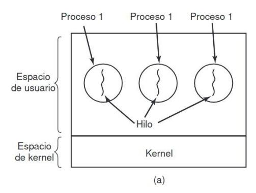
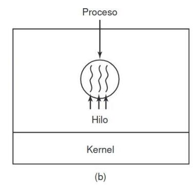
El término multihilamiento también se utiliza para describir la situación de permitir varios hilos en el mismo proceso. Cuando se ejecuta un proceso con multihilamiento en un sistema con una CPU, los hilos toman turnos para ejecutarse. La CPU conmuta rápidamente entre un hilo y otro, dando la ilusión de que los hilos se ejecutan en paralelo, aunque en una CPU más lenta que la verdadera.
Los distintos hilos en un proceso no son tan independientes como los procesos. Todos los hilos tienen el mismo espacio de direcciones, lo cual significa que también comparten las mismas variables globales. Como cada hilo puede acceder a cada dirección de memoria dentro del espacio de direcciones del proceso, un hilo puede leer, escribir o incluso borrar la pila de otro hilo. No hay protección entre los hilos debido a que (1) es imposible y (2) no debe ser necesario. A diferencia de tener procesos diferentes, que pueden ser de distintos usuarios y hostiles entre sí, un proceso siempre es propiedad de un solo usuario, quien se supone que ha creado varios hilos para que puedan cooperar, no pelear. Además de compartir un espacio de direcciones, todos los hilos pueden compartir el mismo conjunto de archivos abiertos, procesos hijos, alarmas y señales, etc.
Es importante tener en cuenta que cada hilo tiene su propia pila. La pila de cada hilo contiene un conjunto de valores para cada procedimiento llamado, pero del que todavía no se ha regresado. Este conjunto de valores contiene las variables locales del procedimiento y la dirección de retorno que se debe utilizar cuando haya terminado la llamada al procedimiento.
Aunque obviamente si un hilo conoce la dirección de la pila de otro hilo la puede modificar.
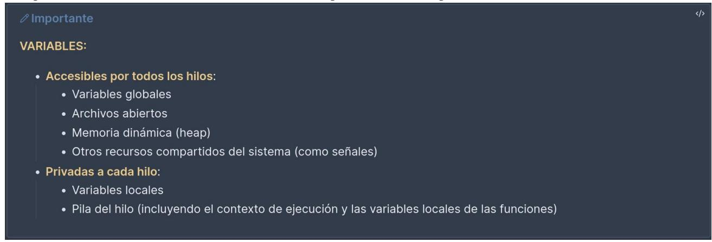
Al igual que un proceso tradicional (es decir, un proceso con sólo un hilo), un hilo puede estar en uno de varios estados: en ejecución, bloqueado, listo o terminado. Un hilo en ejecución tiene la CPU en un momento dado y está activo. Un hilo bloqueado está esperando a que cierto evento lo desbloquee. Un hilo listo se programa para ejecutarse y lo hará tan pronto como sea su turno.
Cuando hay multihilamiento, por lo general los procesos empiezan con un solo hilo presente. Este hilo tiene la habilidad de crear hilos mediante la llamada a un procedimiento de biblioteca, como pthread_create. Comúnmente, un parámetro para pthread_create especifica el nombre de un procedimiento para que se ejecute el nuevo hilo. El hilo creador generalmente recibe un identificador de hilo que da nombre al nuevo hilo.
Cuando un hilo termina su trabajo, puede salir mediante la llamada a un procedimiento de biblioteca, como pthread_exit. Después desaparece y ya no puede planificarse para volver a ejecutarse. En algunos sistemas con hilos, un hilo puede esperar a que un hilo (específico) termine mediante a llamada a un procedimiento, por ejemplo, pthread_join. Este procedimiento bloquea al hilo llamador hasta que un hilo (específico) haya terminado. Otra llamada de hilos común es pthread_yield, que permite a un hilo entregar voluntariamente la CPU para dejar que otro hilo se ejecute. Cuando se llama a phtread_yield el hilo pasa de estar en estado de ejecución a estado listo, es decir, NO SE BLOQUEA y será planificable nada más se llame a la función.
2.4.3. Hilos en POSIX
| Llamada de hilo | Descripción |
|---|---|
| pthread_create | Crea un nuevo hilo |
| pthread_exit | Termina el hilo llamador |
| pthread_join | Espera a que un hilo específico termine |
| pthread_yield | Libera la CPU para dejar que otro hilo se ejecute |
| pthread_attr_init | Crea e inicializa la estructura de atributos de un hilo |
| pthread_attr_destroy | Elimina la estructura de atributos de un hilo |
2.4.4. Implementación de hilos en el espacio de usuario
Hay dos formas principales de implementar un paquete de hilos: en espacio de usuario y en el kernel. cribiremos estos métodos, junto con sus ventajas y desventajas. El primer método es colocar el paquete de hilos completamente en espacio de usuario. El kernel no sabe nada acerca de ellos. En lo que al kernel concierne, está administrando procesos ordinarios con un solo hilo. La primera ventaja, la más obvia, es que un paquete de hilos de nivel usuario puede implementarse en un sistema operativo que no acepte hilos. Con este método, los hilos se implementan mediante una biblioteca. Cuando los hilos se administran en espacio de usuario, cada proceso necesita su propia tabla de hilos privada para llevar la cuenta de los hilos en ese proceso.
Los hilos se ejecutan encima de un sistema en tiempo de ejecución, el cual es una colección de procedimientos que administran hilos (biblioteca de procedimientos).
Cuando un hilo hace algo que puede ponerlo en estado bloqueado en forma local llama a un procedimiento del sistema en tiempo de ejecución. Para evitar que el hilo bloquee a todo un proceso de usar la ENVOLTURA, que es un procedimiento que se llama en tiempo de ejecución cuando un hilo pretende hacer algo que lo puede bloquear.
- El procedimiento comprueba si el hilo se va a bloquear.
- De ser así, cede la CPU a otro hilo.
- Se almacenan los registros del hilo actual en la tabla de hilos del proceso.
- Se busca en la tabla un hilo listo para ejecutarse (será un hilo del mismo proceso).
- Se cargan los registros con los valores del nuevo hilo.
- Se ejecuta el nuevo hilo.
Hacer esta conmutación de hilos de esta manera es mucho más veloz que la conmutación de procesos que se tendría que hacer si se bloquease el proceso entero.
Los hilos de nivel usuario también tienen otras ventajas. Las funciones de manejo de hilos y el planificador de hilos son procedimientos del espacio de usuario, por lo que invocarlos es mucho más rápido que invocar el trap al kernel que se usa en la implementación en el núcleo (el trap a kernel es más costos pues implica realizar un cambio de contexto, vaciar la cache, etc). Permiten que cada proceso tenga su propio algoritmo de planificación personalizado. Tienen una mejor escalabilidad que el kernel, ya que la tabla de hilos central puede llegar a ocupar mucho espacio cuando hay muchos procesos con muchos hilos.
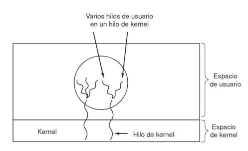
Sin embargo, no se puede impedir que un fallo de página (que es un bloqueo impredecible) en un hilo bloquee a todo su proceso, pues no se puede programar una envoltura. Los hilos no cederán CPU automáticamente nunca pues dentro de un mismo proceso no hay interrupciones de reloj. Por tanto, cuando se comienza a ejecutar un hilo, no se podrá ejecutar ningún otro hasta que esta ceda la CPU voluntariamente
2.4.5. Implementación de hilos en el kernel
Ahora vamos a considerar el caso en que el kernel sabe acerca de los hilos y los administra. No se necesita un sistema en tiempo de ejecución para ninguna de las dos acciones. Además, no hay tabla de hilos en cada proceso. En vez de ello, el kernel tiene una única tabla de hilos que lleva la cuenta de todos los hilos en el sistema. Cuando un hilo desea crear un nuevo hilo o destruir uno existente, realiza una llamada al kernel, la cual se encarga de la creación o destrucción mediante una actualización en la tabla de hilos del kernel. No es necesario crear envolturas
La tabla de hilos del kernel contiene losregistros, el estado y demás información de cada hilo. Esta información es la misma que con los hilos de nivel usuario, pero ahora se mantiene en el kernel, en vez de hacerlo en espacio de usuario (dentro del sistema en tiempo de ejecución). Todas las llamadas que podrían gestionar un hilo se implementan como llamadas al sistema, a un costo considerablemente mayor que una llamada a un procedimiento del sistema en tiempo de ejecución.
Cuando un hilo se bloquea (se encuentra con un fallo de página), el kernel, según lo que decida, puede ejecutar otro hilo del mismo proceso (si hay uno listo) o un hilo de un proceso distinto. Con los hilos de nivel usuario, el sistema en tiempo de ejecución ejecuta hilos de su propio proceso hasta que el kernel le quita la CPU (o cuando ya no hay hilos para ejecutar). Debido al costo considerablemente mayor de crear y destruir hilos en el kernel, algunos sistemas optan por un método ambientalmente correcto, reciclando sus hilos.
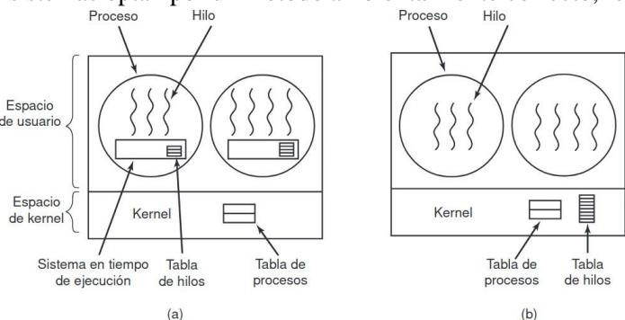
Las funciones de manejo de hilos y el planificador son llamadas al sistema, así que su invoación será más lenta que en la implementación en espacio de usuario. Un trap al kernel es más costoso pues implica relaizar un cambio de contexto, vaciar la caché, etc.
Todos los hilos usarán el mismo planificador. Tienen una mala escalabilidad, ya que la tabla de hlos central puede llegar a ocupar mucho espacio cuando hay muchos procesos con muchos hilos.
2.4.6. Implementaciones híbridas
Se han investigado varias formas de tratar de combinar las ventajas de los hilos de nivel usuario con los hilos de nivel kernel. Una de esas formas es utilizar hilos de nivel kernel y después multiplexar los hilos de nivel usuario con alguno o con todos los hilos de nivel kernel. Cuando se utiliza este método, el programador
puede determinar cuántos hilos de kernel va a utilizar y cuántos hilos de nivel usuario va a multiplexar en cada uno. El kernel está consciente sólo de los hilos de nivel kernel y los planifica.
2.4.7. Hilos emergentes
EL método tradicional para manejar los mensajes entrantes de un sistema distribuido es hacer que un proceso o hilo, que está bloqueado en una llamada al
sistema para recibir mensajes, espere al mensaje entrante.
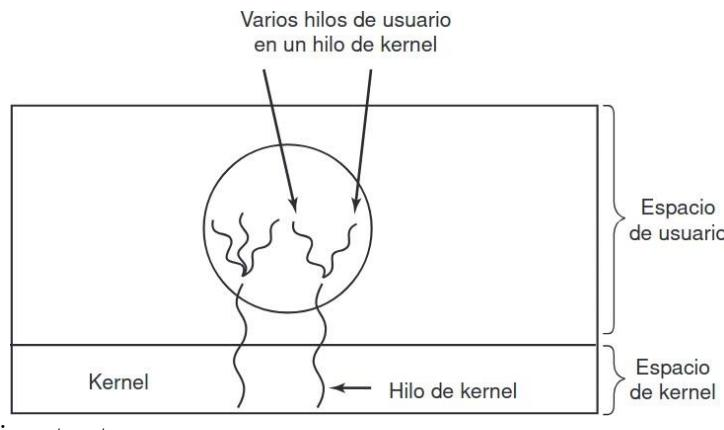
Una alternativa es que la llegada de un mensaje haga que el sistema cree un nuevo hilo, un HILO EMERGENTE, para manejar el mensaje. Como este hilo es complemente nuevo, no tiene ninguna información que restaurar, así que se crea muy rápido.
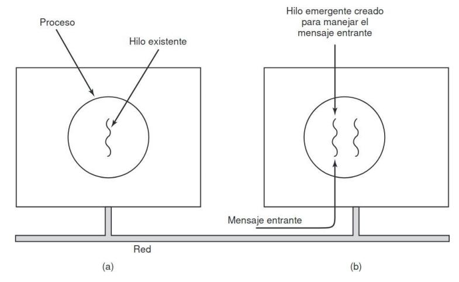
2.4.8. Hilos en Linux
Linux es un SO con implementación de hilos en el núcleo. La llamada al sistema
clone(accion, pila, flags, arg) permite disolver la distinción entre hilos y procesos, creando un nivel de abstracción superior a ellos. En función de las banderas pasadas, creará un hilo o un proceso, pero en principio no hay manera de saberlo.
Su salida en caso de existo es el pid del hijo, -1 en caso de fracaso.
- Acción: función que ejecutará el hilo/proceso creado.
- Pila: tamaño de la pila para el nuevo hilo/proceso.
- Flags: especifican qué se comparte y qué se mantiene en privado. También permiten especificar si el hilo se creará en el proceso actual o en uno nuevo.
- Arg: único argumento de la función acción.
| Flag | Meaning when set | Meaning when cleared |
|---|---|---|
| CLONE_VM | Create a new thread | Create a new process |
| CLONE_FS | Share umask, root, and working dirs | Do not share them |
| CLONE_FILES | Share the file descriptors | Copy the file descriptors |
| CLONE_SIGHAND | Share the signal handler table | Copy the table |
| CLONE_PID | New thread gets old PID | New thread gets own PID |
| CLONE_PARENT | New thread has same parent as caller | New thread's parent is called |
2.5. Planificación de procesos
Cuando una computadora se multiprograma, con frecuencia tiene varios procesos o hilos que compiten por la CPU al mismo tiempo. Esta situación ocurre cada vez que dos o más de estos procesos se encuentran al mismo tiempo en el estado listo. Si sólo hay una CPU disponible, hay que decidir cuál proceso se va a ejecutar a continuación.
La parte del sistema operativo que realiza esa decisión se conoce como planificador de procesos y el algoritmo que utiliza se conoce como algoritmo de planificación. El planificador sólo considera como candidatos los procesos que están en estado listo. Siempre habrá como mínimo un proceso en estado listo, el proceso inactivo (o idle).
En los PC hay pocos procesos activos, por lo que la planificación es poco importante. En los servidores, hay muchos procesos activos, por lo que la planificación es crítica. En cualquier caso, el principal objetivo del planificador es buscar un uso eficiente de la CPU.
2.5.1. Cambio de contexto
El planificador debe escoger muy bien cuándo realizará un cambio de contexto, pues es una operación muy cara computacionalmente.
- Se pasa de modo usuario a modo núcleo.
- Se guarda el estado del proceso actual (incluyendo los registros) en la tabla de procesos y el mapa de memoria.
- Se selecciona un nuevo proceso a ejecutar mediante el algoritmo de planificación.
- Se cargan los datos del nuevo proceso.
- Se inicia el nuevo proceso.
- Probablemente sucedan muchos fallos de caché pues, desde que este nuevo proceso perdió en su momento la CPU hasta ahora, es posible que toda la información que usaba en la caché ya no esté en ella (pues los procesos que se ejecutaron entre tanto la fueron eliminado).
Por tanto, si las conmutaciones de procesos son muy frecuentes, puede llegar a consumir mucho tiempo de CPU, que podría haber sido invertido en avanzar procesos.
2.5.2. Tipos de procesos y planificación
Casi todos los procesos alternan ráfagas de cálculos con peticiones de E/S (de disco), como se muestra en la figura 2.23. Lo importante a observar acerca de la figura 2.23. es que algunos procesos, como el que se muestra en la figura 2.23.(a), invierten la mayor parte de su tiempo realizando cálculos, mientras que otros, como el que se muestra en la figura 2.23.(b), invierten la mayor parte de su tiempo esperando la E/S. A los primeros se les conoce como limitados a cálculos; a los segundos como limitados a E/S (I/O-bound).
Por lo general, los procesos limitados a cálculos tienen ráfagas de CPU largas y, en consecuencia, esperas infrecuentes por la E/S, mientras que los procesos limitados a E/S tienen ráfagas de CPU cortas y, por ende, esperas frecuentes por la E/S. Observe que el factor clave es la longitud de la ráfaga de CPU, no de la ráfaga de E/S.
Los procesos limitados a E/S Los procesos limitados a E/S están limitados a la E/S debido a que no realizan muchos cálculos entre una petición de E/S y otra, no debido a que tengan peticiones de E/S en especial largas. Vale la pena observar que, a medida que las CPUs se vuelven más rápidas, los procesos tienden a ser más limitados a E/S. La idea básica aquí es que, si un proceso limitado a E/S desea ejecutarse, debe obtener rápidamente la oportunidad de hacerlo para que pueda emitir su petición de disco y mantener el disco ocupado. Como se ve en la figura 2.24., cuando los procesos están limitados a E/S, se requieren muchos de ellos para que la CPU pueda estar completamente ocupada.
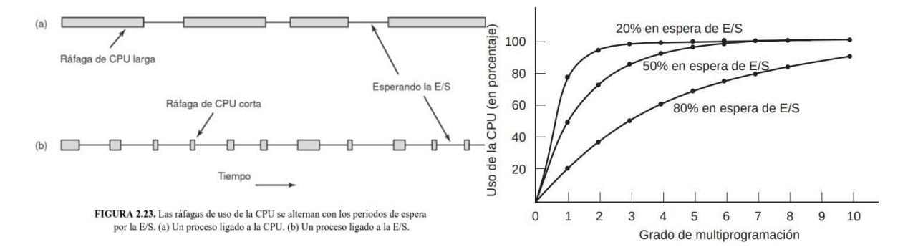
La figura deja claro que, si los procesos gastan 80% de su tiempo esperando las operaciones de E/S, por lo menos debe haber 10 procesos en memoria a la vez para que el desperdicio de la CPU esté por debajo de 10%. Si el proceso promedio realiza cálculos sólo 20% del tiempo que está en la memoria, con cinco procesos en memoria a la vez la CPU deberá estar ocupada todo el tiempo.
2.5.2. Cuando planificar un proceso
Una cuestión clave relacionada con la planificación es saber cuándo tomar decisiones de planificación. Resulta ser que hay una variedad de situaciones en las que se necesita la planificación. En primer lugar, cuando se crea un nuevo proceso se debe tomar una decisión en cuanto a sise debe ejecutar el proceso padre o el proceso hijo. Como ambos procesos se encuentran en el estado listo, es una decisión normal de programación y puede ejecutar cualquiera; es decir, el programador de procesos puede elegir ejecutar de manera legítima, ya sea el padre o el hijo.
En segundo lugar, se debe tomar una decisión de planificación cuando un proceso termina. Ese proceso ya no se puede ejecutar (debido a que ya no existe), por lo que se debe elegir algún otro proceso del conjunto de procesos listos. Si no hay un proceso listo, por lo general se ejecuta un proceso inactivo suministrado por el sistema.
En tercer lugar, cuando un proceso se bloquea, hay que elegir otro proceso para ejecutarlo. Algunas veces la razón del bloqueo puede jugar un papel en la elección. Sin embargo, el problema es que el planificador comúnmente no tiene la información necesaria para tomar en cuenta esta dependencia.
En cuarto lugar, cuando ocurre una interrupción de E/S tal vez haya que tomar una decisión de planificación. Si la interrupción proviene de un dispositivo de E/S que ha terminado su trabajo, tal vez ahora un proceso que haya estado bloqueado en espera de esa operación de E/S esté listo para ejecutarse. Es responsabilidad del planificador decidir si debe ejecutar el proceso que acaba de entrar al estado listo, el proceso que se estaba ejecutando al momento de la interrupción, o algún otro.
Si un reloj de hardware proporciona interrupciones periódicas, se puede tomar una decisión de planificación en cada interrupción de reloj o en cada k-ésima interrupción de reloj. Los algoritmos de planificación se pueden dividir en dos categorías con respecto a la forma en que manejan las interrupciones del reloj. Un algoritmo de programación no apropiativo (nonpreemptive) selecciona un proceso para ejecutarlo y después sólo deja que se ejecute hasta que el mismo se bloquea o hasta que libera la CPU en forma voluntaria. Por el contrario, un algoritmo de planificación apropiativa selecciona un proceso y deja que se ejecute por un máximo de tiempo fijo (quantum).
2.5.3. Metas de los Algoritmos de Planificación
El planificador debe cumplir las siguientes condiciones dependiendo del tipo de sistema.
En todos los sistemas:
- Equidad: los procesos comparables deben recibir un servicio comparable.
- Aplicación de políticas del sistema: por ejemplo, darle más prioridad a un tipo de procesos que a otro.
- Balance: se debe intentar mantener ocupadas todas las partes del sistema cuando se posible (tanto la CPU como los dispositivos de E/S).
En los sistemas de procesamiento por lotes:
- Maximizar el rendimiento: en rendimiento es el número de trabajos por hora que completa elsistema.
- Minimizar el tiempo de retorno: el tiempo de retorno es la media artimética de los tiempos de respuesta de todos los procesos.
- Utilización de la CPU: se debe intentar mantener ocupada a la CPU todo el tiempo
En los sistemas con usuarios interactivos:
- Minimizar el tiempo de respuesta: el tiempo de respuesta es el tiempo que transcurre entre emitir un comando y obtener su respuesta.
- Proporcionalidad: se debe intentar cumplir las expectativas de los usuarios.
En los sistemas de tiempo real:
- Cumplir con los plazos: los plazos son el límite de tiempo que tiene una tarea para finalizar.
- Predictibilidad: se debe evitar la degradación repentina de calidad en los sistemas multimedia.
2.5.4. Algoritmos de planificación
No es sorprendente que distintos entornos requieran algoritmos de planificación diferentes. Esta situación se presenta debido a que las diferentes áreas de aplicación (y los distintos tipos de sistemas operativos) tienen diferentes objetivos. Tres de los entornos que vale la pena mencionar son:
-
- Procesamiento por lotes.
-
- Interactivo.
-
- De tiempo real.
En los sistemas de procesamiento por lotes no hay usuarios que esperen impacientemente en sus terminales para obtener una respuesta rápida a una petición corta. En consecuencia, son aceptables los algoritmos no apropiativos (o apropiativos con largos periodos para cada proceso). Este método reduce la conmutación de procesos y, por ende, mejora el rendimiento.
En un entorno con usuarios interactivos, la apropiación es esencial para evitar que un proceso acapare la CPU y niegue el servicio a los demás. Aun si no hubiera un proceso que se ejecutara indefinidamente de manera intencional, podría haber un proceso que deshabilitara a los demás de manera indefinida, debido a un error en el programa. La apropiación es necesaria para evitar este comportamiento.
En los sistemas con restricciones de tiempo real, aunque parezca extraño, la apropiación a veces es no necesaria debido a que los procesos saben que no se pueden ejecutar durante periodos extensos, que por lo
general realizan su trabajo y se bloquean con rapidez. La diferencia con los sistemas interactivos es que los sistemas de tiempo real sólo ejecutan programas destinados para ampliar la aplicación en cuestión.
2.5.5. Planificación en sistemas de procesamientos por lotes
2.5.5.1. Primero en entrar, primero en ser atendido
Su funcionamiento se basa en una cola de procesos listos.
-
- Mientras se ejecuta un proceso, todos los que van llegando se introducen al final de la cola.
-
- Cuando se bloquea el proceso en ejecución, se escogerá siempre como proceso a ejecutar el primero de la cola.
-
- Cuando el proceso que se había bloqueado pase a estar listo otra vez se colocará al final de la cola como todos los demás.
Es muy sencillo y fácil de implementar mediante una lista enlazada de procesos listos.
Si se ejecutan muchos procesos limitados a E/S, cada vez que un proceso limitado a CPU se bloquee (por ejemplo, por un fallo de página), tendrá que esperar a que terminen de ejecutarse todos los de E/S antes de poder continuar
2.5.5.2. Trabajo más corto primero
Su funcionamiento se basa en ejecutar primero el proceso con menor tiempo de ejecución.
-El tiempo de ejecución del primer trabajo ejecutado repercutirá en el tiempo de respuesta de todos los demás, por lo que debe ser el más veloz.
Naturalmente, se deben conocer de antemano los tiempos de ejecución de todos los procesos.
-Normalmente se consigue pidiéndole al usuario que lanza el proceso una estimación de cuánto tardará.
Aumenta el rendimiento del sistema pues realiza muchos procesos cortos.
Sólo es óptimo en términos del tiempo de retorno si todos los trabajos están disponibles al mismo tiempo
Considere el caso de cuatro trabajos, con tiempos de ejecución de a, b, c y d, respectivamente. El primer trabajo termina en el tiempo a, el segundo termina en el tiempo a + b, y así en lo sucesivo. El tiempo promedio de respuesta es (4a + 3b + 2c + d)/4. Está claro que a contribuye más al promedio que los otros tiempos, por lo que debe ser el trabajo más corto, con b a continuación, después c y por último d como el más largo, ya que sólo afecta a su tiempo de retorno.
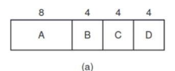
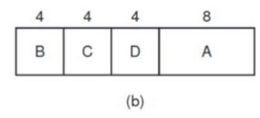
Como ejemplo contrario, considere cinco trabajos (del A al E) con
tiempos de ejecución de 2, 4, 1, 1 y 1, respectivamente. Sus tiempos de llegada son 0, 0, 3, 3 y 3. Al principio sólo se pueden elegir A o B, ya que los otros tres trabajos no han llegado todavía. Utilizando el trabajo más corto primero, ejecutaremos los trabajos en el orden A, B, C, D, E para un tiempo de espera promedio de 4.6. Sin embargo, al ejecutarlos en el orden B, C, D, E, A hay una espera promedio de 4.4.
2.5.5.3. El menor tiempo restante a continuación
Su funcionamiento se basa en seleccionar el proceso con menor tiempo de ejecución restante. Cuando llega un nuevo proceso:
-
- El tiempo total del nuevo proceso se compara con el tiempo restante del que se estaba ejecutando.
-
- Si necesita menos tiempo, se suspende el proceso actual y se guarda su tiempo restante.
-
- Se inicia el nuevo proceso.
Naturalmente, se deben conocer de antemano los tiempos de ejecución de todos los procesos.
-Normalmente se consigue pidiéndole al usuario que lanza el proceso una estimación de cuánto tardará.
Da muy buen servicio a los procesos cortos
2.5.6. Planificación en sistemas interactivos
2.5.6.1. Planificación por turno circular- round robin (apropiativo)
Su funcionamiento se basa en asignar un quantum a cada proceso y ejecutarlos secuencialmente.
Cuando el proceso actual pierda la CPU se escogerá como nuevo proceso al primero de la lista, y el actual se pondrá al fina. Es muy fácil de implementar mediante una lista enlazada de
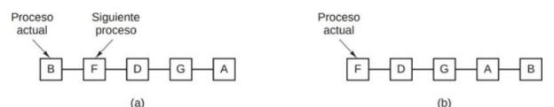
procesos listos. El problema es que considera que todos los procesos tienen la misma importancia. La conmutación de procesos lleva un tiempo que colabora a la sobrecarga administrativa (overhead), que es el tiempo de CPU gastado en ejecutar código que no es de procesos. Por lo que se debe escoger muy bien la longitud del quantum.
Si se coge un quantum demasiado corto, se realizan demasiado cambios de contexto, por lo que el overhead es una proporción grande del tiempo de CPU, aunque los procesos tengan que esperar meno para poder ejecutarse. Si se escoge un quantum demasiado largo, se realizan menos cambios de contexto innecesarios pues muchos procesos no agotan sus quantums, pero si hay muchos procesos los tiempos de esperar serán muy largos.
2.5.6.2. Planificación por prioridad
Su funcionamiento se basa en asignar una prioridad a cada proceso y ejecutar aquel proceso listo con prioridad más alta. Se debe evitar que los procesos con alta prioridad acaparen la CPU. Hay 2 métodos para conseguir esto:
-
Envejecimiento: cada vez que el proceso en ejecución agote un quantum, se reduce su prioridad y si otro proceso tiene alguna más alta, se conmuta.
-
Cuotas de CPU: cada vez que el proceso en ejecución agote un quantum, se cambia al siguiente proceso con más prioridad.
La asignación de prioridad a los procesos se puede hacer de dos formas:
- Estática: se asigna la prioridad del proceso cuando este comienza y se mantiene toda su ejecución
- Dinámica: la prioridad del proceso puede cambiar durante su ejecución. Por ejemplo, se le asigna a cada proceso una prioridad de 1/f donde f es la fracción del último quantum usada por el proceso. Así nos aseguramos de darle más prioridad a los procesos limitados a E/S, como habíamos explicado antes.
Se agrupan los procesos en colas de prioridad y se usa planificación por prioridad entre clases, o planificación round robin dentro de cada clase.
Mientras haya proceso en la clase de mayor prioridad, se ejecutarán estos en round robin. SI la clase de mayor prioridad está vacía, se ejecutarán los de la siguiente, y así sucesivamente. Para asegurarse de que incluso los procesos de prioridad más baja consiguen ejecutarse, se deben ajustar las clases dinámicamente.
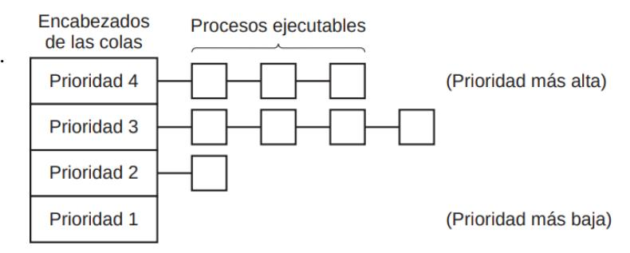
2.6.6.3. Otros algoritmos de planificación
El proceso más corto a continuación es una adaptación del trabajo más corto primero. realizar estimaciones con base en el comportamiento anterior y ejecutar el proceso con el tiempo de ejecución estimado más corto. Suponga que el tiempo estimado por cada comando para cierta terminal es
Si nos dan
La planificación garantizada es un método completamente distinto para la planificación que consiste en hacer promesas reales a los usuarios acerca del rendimiento y después cumplirlas. Una de ellas, que es realista y fácil de cumplir es: si hay n usuarios conectados mientras usted está trabajando, recibirá aproximadamente 1/n del poder de la CPU. De manera similar, en un sistema de un solo usuario con n procesos en ejecución, mientras no haya diferencias, cada usuario debe obtener 1/n de los ciclos de la CPU.
Se puede utilizar otro algoritmo distinto a la panificación garantizada para producir resultados similares con una implementación mucho más sencilla. Este algoritmo se conoce como planificación por sorteo. La idea básica es dar a los procesos boletos de lotería para diversos recursos del sistema, como el tiempo de la CPU. Cada vez que hay que tomar una decisión de planificación, se selecciona un boleto de lotería al azar y el proceso que tiene ese boleto obtiene el recurso.
Algunos sistemas toman en consideración quién es el propietario de un proceso antes de planificarlo. En este modelo, a cada usuario se le asigna cierta fracción de la CPU y el planificador selecciona procesos de tal forma que se cumpla con este modelo. Esto se conoce como planificación por partes equitativas.
2.7. Planificación de hilos
Cuando varios procesos tienen múltiples hilos cada uno, tenemos dos niveles de paralelismo presentes: procesos e hilos. La planificación en tales sistemas difiere en forma considerable, dependiendo de si hay soporte para hilos a nivel usuario o para hilos a nivel kernel (o ambos).
En los hilos a nivel de usuario el kernel planifica los procesos, pues no es consciente de la existencia de hilos. Cuando se planifica un proceso, el planificador de hilos del sistema en ejecución de ese proceso selecciona un hilo en concreto. Mientras dure el quantum de ese proceso, seguirá seleccionando sus hijos. Permite crear planificadores específicos adaptados a las características de una aplicación concreta.
En los hilos a nivel de núcleo, el kernel planifica hilos, en principio sin tener en cuenta de qué proceso son (aunque puede hacerlo). Puede darle más importancia a planificar hilos del proceso que se está ejecutando actualmente pues conmutar a un hilo de otro proceso sería más caro. CUando un hilo se bloquea, no suspende todo el proceso.
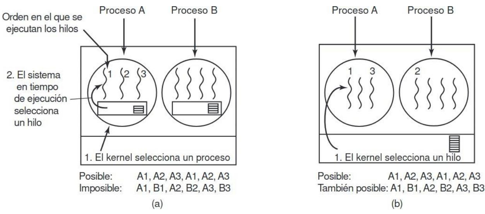
FIGURA 2.29. (a) Posible planificación de hilos a nivel usuario con un quántum de 50 mseg para cada proceso e hilos que se ejecutan durante 5 mseg por cada ráfaga de la CPU. (b) Posible planificación de hilos a nivel kernel con las mismas características que (a).
2.8 Cosas importantes de este Tema
Saber sobre señales y sobre cómo usar los procesos tanto como hilos tema teoría le suele dar más igual. Lo del sigaction y todas esas funciones raras lo suele preguntar. Sobre los algoritmos saber cómo funcionan y las fórmulas porque, aunque no suele, las puede preguntar. Las diferentes implementaciones de hilos son muy importantes al igual que los estados de los procesos.